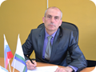
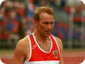
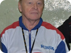
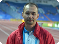
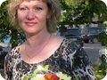

Состав Президиума Федерации
|  | Следников Евгений Владимирович Президент федерации Рабочий телефон: (8332) 22-64-69 |
| Вершинин Алексей Александрович Вице президент федерации | |
|  | Балобанов Анатолий Геннадьевич Ответственный секретарь |
|  | Егоров Александр Алексеевич Старший тренер сборной команды Кировской области по спринту и техническим видам |
| Трушков Алексей Николаевич Старший тренер сборной команды Кировской области по выносливости и ветеранам | |
|  | Яровиков Михаил Николаевич Председатель коллегии судей |
| Подковырин Виталий Дмитриевич Ответственный за работу с вузами | |
|  | Рябова Эльвира Борисовна Ответственная за детский спорт |
| Куклин Андрей Владимирович Ответственный за работу со СМИ Электронная почта: 4n9rew@mail.ru |
{kind=link}
{kind=link}
{kind=link}
{kind=link}
{kind=link}
{kind=link}
{kind=link}
{kind=link}
{kind=link}
Спортивные школы области
| 1 | ДЮСШ №2 г. Киров (основана в 1961 г.) | Директор: | Следников Евгений Владимирович |
| Заместитель директора: | Муракова Светлана Юрьевна | ||
| Сайт: | dyssh2.github.io | ||
| e-mail: | dyssh2@mail.ru | ||
| Телефон: | (8332) 22-64-69 | ||
| Адрес: | 610047 г. Киров пр. Октябрьский проспект 31 | ||
| 2 | ВятСШОР г. Киров (основана в 1998 г.) | Директор: | Перминова Анна Юрьевна |
| Заместитель директора: | Рычкова Ксения Викторовна | ||
| Сайт: | sport43.kirov.ru | ||
| e-mail: | sport43@sport43.kirov.ru | ||
| Телефон: | (8332) 58-51-61, 58-64-08 | ||
| Адрес: | 610000 г. Киров ул. Ленинградская 1 | ||
| 3 | ДЮСШ Юность г. Киров (основана в 2002 г.) | Директор: | Филимонов Олег Геннадьевич |
| Заместитель директора: | Мельчакова Елена Геннадьевна | ||
| Заместитель директора: | Горсткина Светлана Аликовна | ||
| Заместитель директора: | Трещилова Светлана Андреевна | ||
| Сайт: | yunost43.ru | ||
| e-mail: | rodinasport@yandex.ru | ||
| Телефон: | (8332) 78-72-43, 53-10-06, 53-10-45 | ||
| Адрес: | 610006 г. Киров пер. Искожевский 8/а | ||
| 4 | ДЮСШ №1 г. Кирово-Чепецк (основана в 1957 г.) | Директор: | Ежонкова Татьяна Викторовна |
| Заместитель директора: | Трошева Эльвира Анатольевна | ||
| Сайт: | sportshkola1.ucoz.ru | ||
| e-mail: | dush-1k-h@yandex.ru | ||
| Телефон: | (833-61) 6-46-40, 6-26-89 | ||
| Факс: | (833-61) 6-22-68 | ||
| Адрес: | 613040 г. Кирово-Чепецк пр. Кирова 3 | ||
| 5 | ДЮСШ пгт. Афанасьево (основана 01.09.1983 г.) | Директор: | Черанёва Наталья Михайловна |
| Заместитель директора: | Лучникова Елена Ивановна | ||
| Сайт: | dush.ucoz.net | ||
| e-mail: | dush-afan@yandex.ru | ||
| Телефон: | (833-31) 2-22-02 | ||
| Адрес: | 613060 пгт. Афанасьево ул. Спортивная 12 | ||
| 6 | ДЮСШ г. Вятские Поляны (основана 16.09.1966 г.) | Директор: | Еберзин Юрий Владимирович |
| Заместитель директора: | Сметанин Александр Александрович | ||
| Сайт: | dusshvp.ucoz.ru | ||
| e-mail: | dusshvp@mail.ru | ||
| Телефон: | (833-34) 6-29-62 | ||
| Адрес: | 612961 г. Вятские Поляны ул. Ленина 149/а | ||
| 7 | ДЮСШ г. Зуевка (основана в 1988 г.) | Директор: | Терюхов Сергей Петрович |
| Заместитель директора: | Аникеев Виктор Михайлович | ||
| e-mail: | z.s.School@mail.ru | ||
| Телефон: | (833-37) 2-52-08, 8-912-707-98-55 | ||
| Адрес: | 612412 г. Зуевка ул. Восточная 16/а | ||
| 8 | Центр ФиС с. Мухино (основан 1984 г.) | Заведующая: | Карина Светлана Валентиновна |
| Телефон: | 8-953-697-74-01 | ||
| Адрес: | Зуевский район с. Мухино ул. Комсомольская 2/а | ||
| 9 | ДЮСШ пгт Кикнур (основана в 1967 г.) | Директор: | Овчинников Александр Анатольевич |
| Заместитель директора: | Зверева Клавдия Витальевна | ||
| Сайт: | kiknur-school.ru/sport | ||
| e-mail: | dyssholeneva@yandex.ru | ||
| Телефон: | (833-41) 5-19-04 | ||
| Адрес: | 612300 пгт. Кикнур ул. Просвещения 21 | ||
| 10 | ДЮСШ Кильмезского р-на (основана в 1978 г.) | Директор: | Грязев Владимир Леонидович |
| Сайт: | kilmez-dussh.ucoz.ru | ||
| e-mail: | dush-mk@mail.ru | ||
| Телефон: | (833-38) 7-22-75 | ||
| Факс: | (833-38) 2-12-13, 2-16-05 | ||
| Адрес: | 613570 п. Малая Кильмезь ул. Трактовая 27/а | ||
| 11 | ДЮСШ пгт. Кумены (основана в 1980 г.) | Директор: | Золотарёв Михаил Львович |
| Заместитель директора: | Жданова Ольга Алексеевна | ||
| e-mail: | sport-kumeny@mail.ru | ||
| Телефон: | (833-43) 2-18-93 | ||
| Адрес: | 613400 пгт. Кумены ул. Гагарина 24/в | ||
| 12 | ДЮСШ пгт. Лебяжье (основана в 1984 г.) | Директор: | Таныгин Василий Анатольевич |
| Сайт: | sportshkola.my1.ru | ||
| Телефон: | (833-44) 2-02-57 | ||
| Факс: | (833-44) 2-01-72 | ||
| Адрес: | 613500 пгт. Лебяжье ул. Комсомольская 4 | ||
| 13 | ДЮСШ г. Советска (основана 30.12.1957 г.) | Директор: | Филимонова Татьяна Ивановна |
| Заместитель директора: | Пономарёва Екатерина Аркадьевна | ||
| Сайт: | dush39.ru | ||
| e-mail: | tatyanafilimonova1974@yandex.ru | ||
| Телефон: | (833-75) 2-25-04 | ||
| Адрес: | 613340 г. Советск ул. Ленина 52/а | ||
| 14 | ДЮСШ г. Уржум (основана 30.01.1959 г.) | Директор: | Жук Александр Владимирович |
| Заместитель директора: | Кожевников Евгений Геннадьевич | ||
| e-mail: | cool.cool-c2013@yandex.ru | ||
| Телефон: | (833-63) 2-04-66, 2-00-09 | ||
| Адрес: | 613530 г. Уржум ул. Заболоцкого 1/а | ||
| 15 | ДЮСШ пгт. Фаленки (основана в 1989 г.) | Директор: | Каратаева Марина Павловна |
| Заместитель директора: | Миклина Нина Сергеевна | ||
| Сайт: | dyssh.falenki.ru | ||
| e-mail: | sportsh.falenki@rambler.ru | ||
| Телефон: | (833-32) 2-20-36 | ||
| Адрес: | 612500 пгт. Фаленки ул. Первомайская 8 | ||
| 16 | ДЮСШ Яранского района (основана в 1953 г.) | Директор: | Царегородцева Галина Николаевна |
| Заместитель директора: | Созонова Галина Леонидовна | ||
| Заместитель директора: | Овсянникова Татьяна Анатольевна | ||
| Сайт: | dushyar.nethouse.ru | ||
| e-mail: | dushyaransk@mail.ru | ||
| Телефон: | (833-67) 2-11-93 | ||
| Адрес: | 612260 г. Яранск ул. Кирова 65 | ||
Полезные ссылки
IAAF.org - Международная ассоциация легкоатлетических федераций
RusAthletics.com - Всероссийская федерация легкой атлетики
TrackAndField.ru - Новости и результаты соревнований, соревновательная статистика
Runners.ru - Новости и результаты соревнований, соревновательная статистика
на СТАРТ! - Новости и результаты соревнований, соревновательная статистика
Парсек - Сверхмарафон, горный бег, пробеги
Пробег - Сверхмарафон, горный бег, пробеги
Пенза - Комитет Пензенской области по физической культуре и спорту
Чебоксары - Министерство физической культуры и спорта Чувашской Республики
Казань - МБОУ ДО "СДЮСШОР по легкой атлетике" г. Казани
Администрация
По всем вопросам касающимся графической части ресурса и предложениям по добавлению информации пишите на почтовый ящик 4n9rew@mail.ru или вконтакте. Что касается содержательной части - задавайте вопросы к соответствующим ответственным лицам (главные судьи соревнований по вопросам конкретных стартов, Президиум Федерации по общим вопросам).
История
Декабрь 2011 года. Появилась идея создания ресурса, посвященного лёгкой атлетике в Кировской области. Данная идея долгое время обдумывалась, ставились цели и задачи этого ресурса, рассматривались различные варианты его реализации, велись подготовительные работы.
31 января 2012 года. Непосредственное начало реализации. Написаны первые строки кода сайта.
5 февраля 2012 года. Весь планируемый функционал реализован. В ресурс включены имеющиеся протоколы зимнего сезона 2012 года. Таким образом, появилась первая версия сайта. Она является довольно простой, с достаточно скудной по сегодняшним меркам информацией. Идут работы по поводу выкладывания данного ресурса в интернет. Изучаются вопросы хостинга и доменного имени, а также цена вопроса по данным направлениям.
9 февраля 2012 года. Сайт временно выложен на личном ресурсе автора данного проекта. Эту дату уже можно отмечать, как День Рождения сайта.
14 марта 2012 года. На заседании Кировской Областной Федерации Лёгкой Атлетики этот ресурс был признан Официальным сайтом КОФЛА. В связи с этим, был получен доступ к новой информации, ранее не представленной на сайте. Таким образом, был получен толчок к увеличению функционала сайта, а также появился стимул к давнему желанию автора переделать дизайн и дать ресурсу своё собственное имя.
3 апреля 2012 года. Все планируемые работы по расширению функционала завершены. Также, после долгих опытов и консультаций с друзьями, полностью реализована вторая версия сайта, работы над которой начались ещё две с половиной недели назад. В течении этого периода, одна за другой появлялись на сайте страницы с новой информацией. Новое оформление было на порядок лучше и функциональней. Это оформление было на сайте на протяжении более полутора лет. Но самое главное это то, что в этот день сайт покинул личный хостинг автора и переехал на свой собственный, с коротким, ёмким и вполне логичным именем - KOFLA.RU. В этот день сайт получил своё Имя.
Июнь 2012 года. Были сделаны зарисовки новой версии сайта, полностью реализовано несколько страниц сайта. Но данный дизайн так и не был доделан до конца в связи с уходом автора в Вооруженные Силы Российской Федерации для прохождения обязательной службы по призыву. Именно тогда промелькнула мысль, что у данного дизайна есть имя. И спустя год, стало отчётливо ясно, что это имя - Forever. Данное название было дано в честь самого известного долгостроя в истории компьютерных игр - Duke Nukem Forever. Разработка этой игры началась в 1996 году, несколько раз прекращалась и сворачивалась, многие уже разуверились, что игра появится. Но через 14 лет, в 2011 году, игра всё-таки была выпущена.
Октябрь 2013 года. Работа над концепцией возобновлена. Имевшиеся зарисовки были полностью переписаны, благодаря чему сайт стал масштабируемым, стал корректно отображаться в других браузерах, на экранах с меньшим разрешением, он стал занимать гораздо меньше места, чем первоначальный концепт, соответственно стал быстрее загружаться. Была переработана система навигации, добавлены связки с социальными сетями, продуман способ отображения данных, добавлен альтернативный дизайн и многое другое.
25 декабря 2013 года. Сайт принял новый облик. старые варианты решено было не удалять, а оставить для истории, поэтому информация из них не была перенесена в полном объёме: протоколы соревнований так и остались в них, в связи с исчезающе низкой их востребованностью по прошествии больших сроков, но доступ к ним был лаконично вписан в новом дизайне. С этого момента постоянно незначительно улучшается навигация по сайту, структурированность информации, ведутся работы по повышению удобства пользования этим информационным ресурсом, добавляются новые данные, например адреса спортшкол с отображением на карте.
2 июля 2014 года. По итогам анализа посещаемости, выяснилось, что сайт нашел свою нишу в интернете. Каждый день на сайт в поиске ответа на интересующие вопросы выходят от 40 до 200 человек. Абсолютное большинство пользователей являются постоянными, проживающими на территории области, поэтому можно сказать, что основная цель создания сайта была достигнута - любой желающий теперь может узнать то, что хочет: как он сам пробежал, как выступили его соперники, во сколько начнется его вид на соревнованиях, за сколько надо пробежать чтобы выполнить 2 взрослый разряд и многое-многое другое. Легкая атлетика для наших спортсменов стала доступней, прозрачней и понятней. Многолетний труд администратора ресурса не был напрасным: даже те, кто первоначально насторожено относился к идее создания сайта под эти нужды и задавал вопросы о целесообразности такого шага, теперь заходит на эту площадку вместе с остальными. СМИ также берут за основу информацию с этого портала, благодаря чему об успехах наших лучших спортсменов узнают все жители области. Но это не значит, что надо останавливаться на достигнутом. В дальнейшем планируется продолжить улучшение графической части ресурса, повышение удобства работы с ним, не забывая про информационную составляющую, одним словом развивать данный ресурс, тем самым популяризируя лёгкую атлетику в Кировской области.